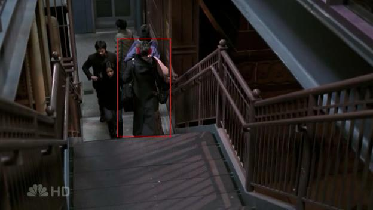
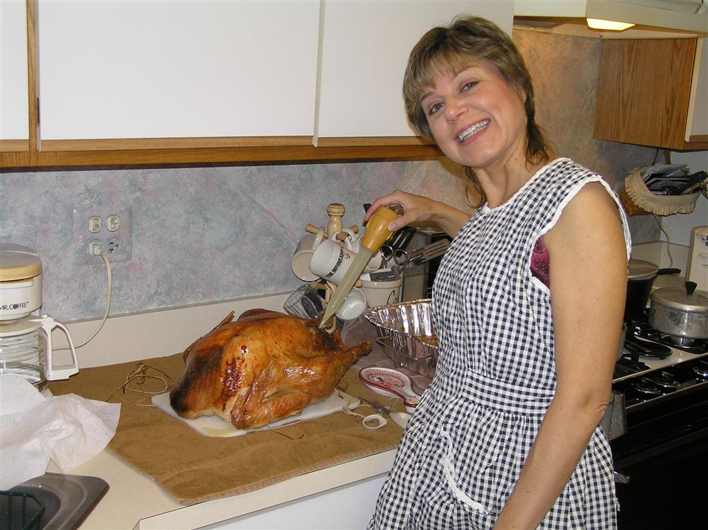
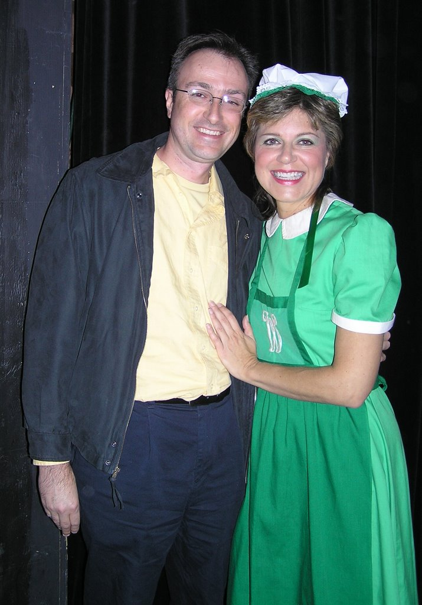
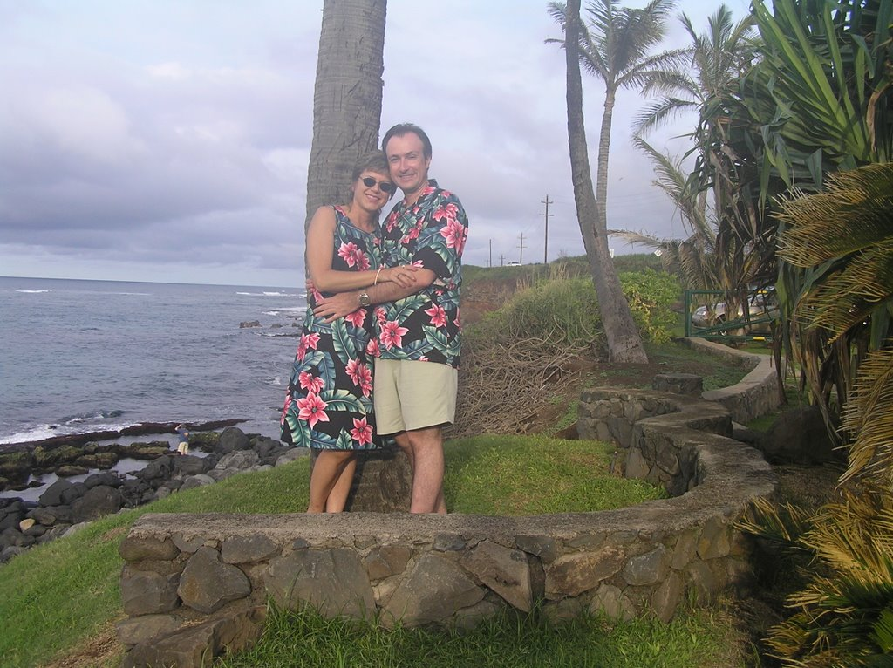
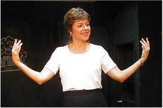

and so it begins...
It has been a very busy week for our intrepid performer! Aside from The Wizard of Oz and ER, Carol has also been auditioning for various other upcoming shows. Her hard work (and head shots) appear to have paid off, as…

The Lady in Red
Last night marked Carol's triumphant return to television with her debut on ER! 38:27 into the episode, Carol makes her appearance as Neela and Gates are walking up the stairs to the L platform. She is walking down the…
Nice Head
... shots. Carol finally decided on which photos to use for her official head shots. (Thanks to all who sent feedback and helped her decide!) For your viewing pleasure, I present them here. Be sure to look for them on a…
1 comment
ER Reminder
Just a reminder for all Carol fans to set your Tivo for ER this week (9:00 pm CST on NBC, for those that don't watch ER regularly). Looking at the "Next week, on ER..." previews after last week's episode, it was clear…
New Pics from Wiz
The Wheaton Drama site has posted some production photos here (scroll to the bottom of the page). There is one shot of Carol's memorable Tin Man buffing. Also, note the rolling cast and crew pictures on the right side.…

To The Wizard!
"A fabulously entertaining rendition of the Wizard of Oz!", said one anonymous reviewer. Craig Gustafson as the Cowardly Lion was channeling Bert Lahr, and Emma Pauer was too cute for words as Toto. Special effects were…
2 comments
Helicopters, Firetrucks, and Ambulances... oh my!
Carol has had a busy week-- starting with another scene for ER last weekend. It was a night time scene in a west-side neighborhood, with helicopters, firetrucks, and... well, you get it. Watch for Carol's Blazer…
3 commentsPrepare for a trip to the ER
Hello fans! We've returned from our trip to Hawaii (as promised, more pictures will be forthcoming as I get some time to go through them). In the meantime, Carol has returned to her busy rehearsal schedule for Wizard,…
1 comment
Aloha, Munchkins!
Aloha, from sunny Hawaii! Carol has taken a break from her busy rehearsal schedule for a few days of rest and rejuvenation. More pictures to come... But don't fret, we'll be back in time for opening night, on November…

Movin' Right Along... photo recap
If you missed out on Movin' Right Along, there is an updated slideshow on Shutterfly, with some new pictures.
1 comment